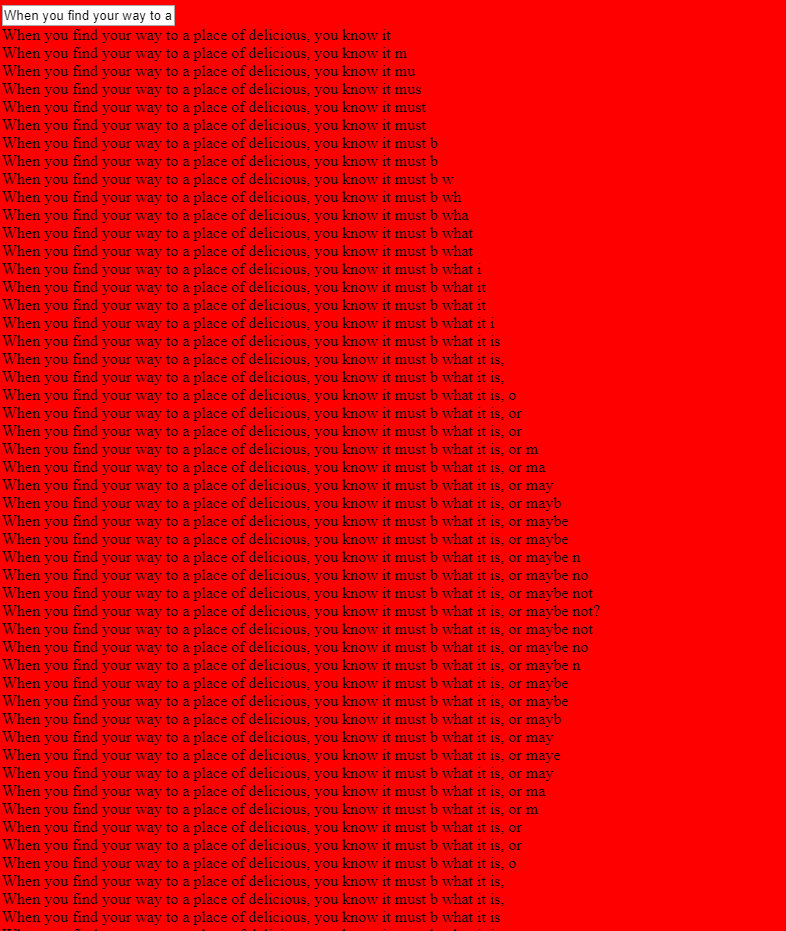

10: /bus: The bus is huge. You can’t believe how huge it is. In fact, it’s larger than you could even comprehend. Every time you go to check how big it is, it’s bigger. And it’s a big machine. There’s no way a big machine like this can exist. This is a massive bus, that is for sure
/bookclub: You’re in a book club, and something about that. Maybe about contributing. Or figuring out who the spy is.
/trainpassage: A train is accelerating by you, and you have to watch it for some reason
9: /radioman: feed the information to radio man as he moves around the blocks
/gridkey: there is grid lock, and you have to find the key to remove the lock
/desirebot: short animated story: it's a story about one but who desires other bots
8: textfall:

7: tree: give input, and the tree grows -- as input gets larger, tree gets larger. maybe each word is a new main branch, and the letters in the word are the smaller branches. also background color changes. pattern of tree should change depending on
exact input.
authorteers: three columns. as writing the intro, there are three different auto-completions of the intro. maybe non deterministic. maybe infinite scroll.
6: sabercat: feline url parameter. keeping it simple. unique for each input. maybe smooth transitions
5: record: use browser mic permission to record memo files. can download individually or all. files stay in local storage. can playback.
kanban board
books: just books that I have gotten something from, not necessarily that I have read word for word

4: 11infinity: 1 and another 1 make another, and eventually the cycle repeats
3: isbeen: display a collection of books from isbn numbers. landing page. blog
2: piano-a-playa: play the piano, store songs as url param. maybe keyboard shortcuts. maybe record. maybe metronome

1: sabercat: string to art